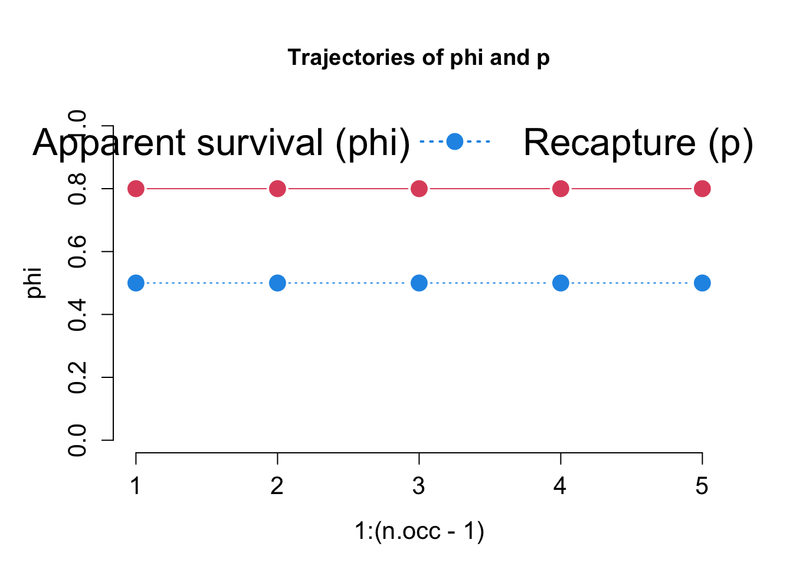
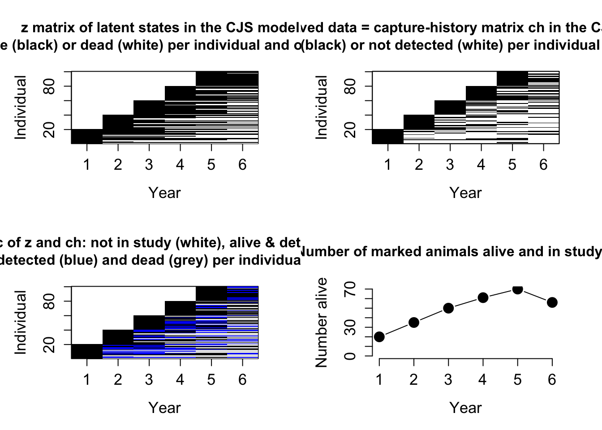

Cormack-Jolly-Seber Models – notes
WIS 4601 - Teaching Demo
Last compiled: 2025-04-18
Write link to course website on the dry-erase board
With today’s lecture, we are going to learn how to estimate survival – or do our best to estimate survival – using capture-mark-recapture data.
Readings & Materials
I asked you all to read Chapter 7 of Kery & Schaub 2012 before class, which provides a simple introduction to these models and how to fit them. The other two chapters also provide context on implementation in both Bayesian and frequentist methods - providing these here mostly for reference.
For today’s class, you can access the slides, code, and data on the course website, as always. Navigate to https://brianfolt.github.io/NRES_710/cjs_models.html, and then there are links on that page to access all the material.
Review
A quick review before we dive into today’s topic. Remember that for the final few weeks of the semester, our goal is to work toward building an ‘integrated population model’. Over the last two weeks, we have learned how to (1) estimate population size using count data and hierarchical state-space models, the model in this central grey box, but then we also learned (2) how to estimate population productivity using data describing reproduction using Poisson regression models, and then (3) last class we learned how to estimate survival using ‘known-fate data’ with a Kaplain-Meier model. We are learning how to build each of these individual models for abundance, reproduction, and survival, so we can put them all together into integrated population models at the end of the semester.
But our study animal is too small for radiotags or GPS devices, and we don’t have ‘known fate’ data. What do we do when we don’t have GPS tags for our critters…?
Study design
We previously learned how to use capture-mark-recapture studies to estimate population size using Lincoln-Petersen models. But we can also use mark-recapture data to estimate survival!
Basic study design involves going out, capturing animals, uniquely marking them with some way that will provide a permanent form of identification of that individual into the future, and then let the animal go alive!
There are three examples of different marking ‘technologies’ in these pictures: alligator with a tail tag, an alligator snapping turtle with unique combinations of screws being drilled into the marginal scutes of the carapace, or a tag being banded onto the leg of a large bird.
To estimate survival though, we need to repeat these sampling occasions through time. We might survey the study area every year, and then we can use these data to estimate annual survival probability through time.
Study design 2
There are a few considerations when designing these studies:
- Fixed study area: area should not change through time. Fairly simple & standard approach. If the study area increases, site fidelity will increase, and apparent survival will increase.
- Study area is ~large. We want it to encompass a relatively large sample of individuals, and preferably those individuals will not leave the study area.
- Samples are ~instantaneous in time. We generally don’t want to take our sample at different times of the year, or else we might bias our estimation of survival probabilities.
- Individuals are a random sampled of the population during each occasion
I will revisit these design features later on.
Open population models 1
We previously discussed ‘closed population models’, where we assumed the population was closed to any change in \(\large N\) during our study
- There are no births, deaths, emigration, or immigration during the study.
- Any \(\large 0\) in the capture histories was due to detection error – the animal was present in population, but it simply went undetected.
Open population models 2
Open population models let us relax the assumption of population closure.
Between sampling occasions, individuals can enter the population through birth or immigration, or leave the population by dying or emigrating away.
Zeros in our data can result from animals (1) being present and undetected, OR (2) being not present because they either died or emigrated away.
Different open population models can be used to estimate survival, recruitment, and movement – but our focus today is on survival estimation.
Cormack-Jolly-Seber (CJS) models
Enter one of the most famous models in wildlife biology – the Cormack-Jolly-Seber model, or CJS models for shirt. CJS models use capture-mark-recapture data to estimate survival of animals while accounting for a pesky nuisance variable… imperfect detection.
CJS models are open-population state-space models to estimate survival.
We previously talked about state-space models for population size… these were models that estimate a true, underlying, “latent” state of populations (THE STATE PROCESS), while accounting for imperfect detection (OBSERVATION PROCESS). We can do something similar with CJS models.
For CJS survival models, we are interested in estimating the true underlying, often-unobservable state of individuals: each circle represents a time step, and whether individuals are alive (blue) or dead (white). Each individual has a stochastic probability of surviving and staying alive – but if they don’t survive, then they die, and they stay dead into the future – this is deterministic.
Cormack-Jolly-Seber (CJS) models 2
Overlaying this true, latent, or ‘hidden’ state, is the observation process. Again, when we go out into nature, animals are not always detected, even if they are alive and present. The red circles indicate situations where an animal was alive, and we observed it. But sometimes we do not. This is a stochastic process that can vary randomly. However, once an animal is dead, this becomes deterministic – we cannot observe a dead animal because it’s ‘dead and gone.’
Using our capture histories through time and a state-space model, we are going to try to estimate these two different, stochastic process: the probability of surviving or dying (the black dashed arrows), and the probability of an alive animal being recaptured (red dashed arrows).
An important feature to mention is that this model is ‘conditioned on the first capture’. When the first capture occurs, we know an animal was certainly alive and observed, so these processes are deterministic. Into the future, the animal may survive and be detected, but the model considers those processes randomly-varying or stochastic.
Cormack-Jolly-Seber (CJS) models
Data are most frequently organized as ‘capture histories’, which are a series of \(\large 1\)s and \(\large 0\)s denoted when individuals are captured (\(\large 1\)) or not (\(\large 0\)) through time. The capture histories have dimensions of n x t: each row is for an individual, n, and each column is a sampling occasion. So for example, if we sample the population every summer, each column will be our annual sampling occasion; and then each row is an individual, and each entry along each row is whether or not we observed that individual.
Here is an example: here are capture histories for 10 individuals over a 6 year period. The first few animals were recaptured quite a few times, but note individual 7 – it was captured and marked, went undetected in the second year, and then was recaptured again in year 3.
I want to briefly point out these ‘internal zeros’ – occasions where an individual was not detected, that are sandwiched between two occasions where an individual was detected. These are really important to us… we’ll see this later.
Cormack-Jolly-Seber (CJS) models
After an animal is marked and released, the next time we go out to sample the population, there are 4 possible scenarios for that animal:
- Individual survives and is
re-captured (capture history =
11)
- Individual survives but is not
recaptured (capture history =
10)
- Individual dies and is not
available for recapture (capture history =
10)
- Individual survives but leaves the study
area (emigrates) and is not available for
recapture (capture history =
10)
Q: So let me ask you all a question… If we observe a ‘10’ capture history and we assume that the animal is not available for recapture, is that animal alive or dead? We can’t know!
We can’t tell whether the animal is (1) alive and emigrated away OR (2) if it died. Both emigration and mortality result in the same observed data (10) – but these are very different processes.
This is a key limitation of these data – we cannot disentangle death from emigration.
Cormack-Jolly-Seber (CJS) models
Without additional data, we can’t distinguish between scenario 3 (death) & scenario (emigration). So, what this model can estimate is:
Apparent survival probability – denoted with the greek letter Phi – this is the probability that an individual survives and also stays within the study area.
We can break this down a bit. Last week we learned how to estimate true survival probability, S, using known-fate models. Phi is the true survival times 1 minus the emigration probability, epsilon.
Cormack-Jolly-Seber models
However, the data we are collecting don’t have any information about true survival or emigration, so we cannot disentangle true survival from emigration… and instead are stuck with estimating apparent survival probability.
The CJS model estimates 2 parameters: - phi – apparent survival probability - p – recapture probability
I’ve removed the t subscripts for simplicity, which implies that these probabilities are constant across all sampling occasions.
But, this model can be adapted to having time-varying survival and recapture probabilities, as we’ve done with other models earlier in the semester (i.e., time effects).
How It Works 1
Brian write this on the board
I’m going to create a flow chart that might help us think about how capture histories can be used to disentangle apparent survival, recapture probability, from death and emigration.
Let’s consider one animal in a population that we marked in Occasion 1 and released back into the population.
Occasion 1 (True State) –> Occasion 2 (True State) + Occasion 2 (Observation)

Q: During the interval from Occasion 1 to Occasion 2, what can happen to this animal?
It can survive ALIVE and stay in the study area, or it can die OR emigrate.
Q: Does anybody know what the probabilities are of these two opposing outcomes?
- survival would be apparent survival probability, phi
- dying/emigration would be 1 minus phi
Q: If the animal is alive and present during sampling Occasion 2, what are two possible outcomes for us?
We may Recapture it (with recapture probability, p). This animal would then have a capture history of 11 over the first two occasions.
Q: Does anybody know what the probability of observing a ‘11’ capture history is? phi times p
If this animal is alive but not recaptured, then the capture history is 10, and the probability is phi * (1-p).
If the animal either dies or emigrates away between the occasions, then we have no chance of recapturing it – it is gone from the population. If the animal is truly gone, then then our probability of not seeing it is ONE. This also yields an encounter history of 10, but has a different probability – 1 minus phi!
The point here is: even though both the ‘10’ outcomes have the same encounter histories, they have different probabilities.
How It Works - Ind 1
Let’s use these three distinct probability products to consider a few different capture-history scenarios. Let’s say we observed an individual over three consecutive occasions: that means it survived two intervals, and was recaptured both times. So we observed a “11” for this animal twice, and using the probabilities from the last slide, the overall probability of this outcome is phi1 * p2 * phi2 * p3.
How It Works - Ind 2
For individual two, we didn’t observe it on the second occasion, but then recaptured it on the third occasion. This ‘internal zero’ here that is surrounded by 1s has information; since it was bracketed by a 1 on both sides, we know that it survived and stayed in the study area, but went undetected. So the probability of the 10 in this instance is phi(1-p) and then the final 1 is phi*p – it survived and was detected.
How It Works - Ind 3
Individual 3 is a little trickier. This animal survived interval 1, and was recaptured on occasion 2 (phi1 * p2). But we don’t know what happened to it during interval 2: it could have survived interval 2 and gone uncaptured on occasion 3 (1 - p3), OR, died during interval 2 with probability 1 - phi2. Since we don’t know whether it survived or died during interval 2, we sum both of those probabilities together in the second term.
phi = 0.8, p = 0.5
[0.8 * 0.5] * [0.8(1-0.5) + (1 - 0.8)] = 0.4 * (0.4 + 0.2) = 0.3
How It Works - Ind 4
Last, individual 4 is the most confusing. It was captured, marked, and released, and never seen again. It could have:
died during interval 1 (1 minus phi1), OR
survived interval 1, gone uncaptured during occasion 2, and died during interval 2, OR
survived interval 1, gone uncaptured during occasion 2, AND survived interval 2 but went uncaptured during occasion 3.
We can the probabilities of these three outcomes together with this equation, and then simplify it with factoring to the more simple term expressed in the table.
Takehome message: This math is confusing, and I don’t want to get too deep into it because it is confusing But, the takehome message is that:
- different outcomes in our data can be related to distinct probabilities.
- Since these different capture histories have different probabilities, we can use these data to separately estimate detection and apparent survival parameters using maximum-likelihood or Bayesian methods.
And the internal zeroes are critical for doing this.
Q: Any questions?
CJS model as a state-space model
Using the tools we’ve learned this semester, we can write the CJS model as a Bayesian state-space model. I prefer to teach and implement CJS models with Bayesian approaches, because they are more simple and intuitive.
This model is hierarchical, in that it has two sub-models: the state process model, estimating whether or not individuals are alive, and the observation model, which uses information about whether individuals are alive to estimate recapture probability.
Process model
Equation 1 is our starting point for the process model: We know that the animal was alive and in the study area at the time it was first captured, so we set: Z_i,f1 = 1.
That means the true state for individual i at their first capture occasion is “alive.”
Equation 2 is the process model for all capture occasions after the first. This equation says: If the animal was alive at t−1, it survives to occasion t with probability phi. If it wasn’t alive at t−1, it can’t come back back to being alive – so it stays 0 (dead).
This equation estimates apparent survival; with a Bernoulli draw, Phi is basically a weighted coinflip: survive and stay with probability phi, or die/emigrate with probability 1-phi.
Equation 3 is the observation model. Y is our raw data – our captures histories – whether we saw each individual i during each occasion t. This says: If the animal is alive and in the study area at time t — that is, if z = 1 — then we observe it with probability p. If it’s dead or emigrated, we don’t have a chance to see it.
So overall, we’re modeling both the underlying biological state — whether each individual is alive — and the chance of seeing it, which together form a hierarchical, state-space framework.
By conditioning the model on the first capture year of each year with z = 1 and providing capture histories, this is enough information for the samplers to estimate what the most likely probabilities are for phi and p.
CJS model with time-variation
As for other models we’ve seen this semester, we can add linear, individual-level covariates or temporal variation to the CJS model using the ‘logit’ link function.
Remember, our parameters of interest here are probabilities, which are constrained between 0 and 1. We cannot fit simple linear models to probabilities, because linear models assume that response is continuous and unbounded. Instead, we have to use the ‘logit’ link function – 1 / (1 + exp(-(linear model))) – which unconstrains our betas to be values from negative infinite to positive infinite.
JAGS does the logit-link for us in short-hand using the ‘logit()’ command (second equation).
The third and fourth equations show how we would specify time-varying survival, where survival in a given year is the sum of the logit-mean intercept, mu, plus epsilon_t, which is a normally-distributed random variable with a mean of zero and a variance of tau_phi. We’re saying… that survival can vary randomly from year to year with a normal distribution.
And we can do the same thing for recapture probability, in equations 5 and 6.
Identifiability of the CJS model with time-variation
Now there is something important we need to be aware of: if we make this model fully-time dependent for both phi and p, the terminal parameters of \(\large \phi_T\) and \(\large p_T\) – the estimates of phi and p in the last year – are not identifiable.
The model will return posteriors for both parameters (because each has a prior), but the model will not be able to separately estimate both parameters.
Posteriors will actually be: \(\phi_T \times p_T\)
Identifiability of the CJS model with time-variation 2
Why is this? Here is a simple example, a CMR study with two occasions, where we captured 100 individuals in the first occasion and 60 were recaptured in occasion 2.
Well, we can get 60 recaptures with survival of 0.8, and a recapture probability of 0.75, or with higher survival and lower recapture, or with lower survival and higher recapture.
There is no unique solution! We must have more than 2 occasions and internal zeros to have enough information to disentangle survival and detection. So, always design your CJS study to have at least 3 or more sampling occasions.
Workarounds
Use a more simple model with a constant recapture probability.
Include covariatsion on survival or recapture probabilities.
Or use informed priors.
Assumptions of the CJS model
- Every animal has the same chance of capture, \(p\)
- Every animal has same probability of surviving \(\phi\)
- Marks are not lost
- Samples are instantaneous (short periods)
- All emigration is permanent (
101must indicate \(1 - p\)) - Fates of individuals are independent of others
Design your study to meet these assumptions:
- Fixed study area
- Study area is ~large
- Samples are ~instantaneous
- Individuals are randomly sampled
Analysis in R
Let’s explore what Cormack-Jolly-Seber analysis might look like in Program R.
#install.packages("AHMbook", "wiqid") # install - only have to run once
library(AHMbook) # load each package - run at start of exercise
library(wiqid) If you haven’t previously installed the packages ‘AHMbook’ and ‘wiqid’, you will have to do so on your computer. Just run the install packages line one time, and then you never have to do it again on your machine.
And then load each package before starting the analysis.
In previously classes and labs, we learned how to simulate our own data, where we decided what all the fixed and random effects were, and how much random noise was present in the data. Unforunately, data simulation gets a little harder for Cormack-Jolly-Seber models, because there are multiple random processes that are hierarchically linked in the data.
The good news is: the ‘AHMbook’ library has a built-in function to simulate data for us! Let’s take a look at this function, which is called ‘simCJS()’
help(simCJS)We can tell the function to simulate data for us with, say, 6 occasions, 20 marked animals each occasion, apparent surivival of 0.8, and recapture probability of 0.5.
Let’s simulate the data, and examine the structure of the output object, which we always call ‘datum’.
datum <- simCJS(n.occ = 6, n.marked = 20, phi = 0.8, p = 0.5, show.plot = FALSE)
str(datum)## List of 9
## $ n.occ : num 6
## $ n.marked: num [1:5] 20 20 20 20 20
## $ phi : num [1:5] 0.8 0.8 0.8 0.8 0.8
## $ p : num [1:5] 0.5 0.5 0.5 0.5 0.5
## $ z : num [1:100, 1:6] 1 1 1 1 1 1 1 1 1 1 ...
## $ ch : num [1:100, 1:6] 1 1 1 1 1 1 1 1 1 1 ...
## $ f : int [1:100] 1 1 1 1 1 1 1 1 1 1 ...
## $ n.ind : num 100
## $ n.alive : num [1:6] 20 34 48 59 68 55This object saves various information about our simulation… but the key thing is: it saves (1) the ‘capture histories’ CH, and (2) the first year that we marked-and-released each animal, F. These two slots are raw-data requirements for our analyses.
Let’s look at the capture histories:
head(datum$ch, 20)## [,1] [,2] [,3] [,4] [,5] [,6]
## [1,] 1 1 1 0 1 0
## [2,] 1 0 0 1 0 0
## [3,] 1 1 0 0 0 0
## [4,] 1 1 0 0 0 0
## [5,] 1 0 0 0 0 0
## [6,] 1 1 0 0 0 1
## [7,] 1 1 1 0 1 1
## [8,] 1 1 1 1 1 1
## [9,] 1 0 0 0 0 0
## [10,] 1 1 1 0 0 0
## [11,] 1 0 0 0 0 0
## [12,] 1 0 0 0 0 0
## [13,] 1 0 0 0 0 0
## [14,] 1 1 1 0 0 1
## [15,] 1 0 0 0 0 0
## [16,] 1 1 0 0 0 0
## [17,] 1 0 0 0 0 0
## [18,] 1 1 1 1 1 1
## [19,] 1 1 0 1 0 0
## [20,] 1 0 1 0 1 1One other cool thing this function does, it that it will graph the fates of each individual for us, Z, and whether or not we observed each individual. We can quickly do that by re-running our simulation with the ‘show.plot = TRUE’ option enabled.
datum <- simCJS(n.occ = 6, n.marked = 20, phi = 0.8, p = 0.5, show.plot = TRUE)
The first graph is the Z matric – whether or not each animal was alive.
The second graph is our OBSERVED DATA, our capture histories – there is less black here, because even though many animals were alive, they went undetected!
The third graph is both (1) the capture histories in black and (2) the unobserved but live/present. So we can see how frequently we miss animals due to imperfect detection in these data!
The package ‘wiqid’ has built-in functions to perform CJS analyses using dataframes like the the one we just created. There are both frequentist and Bayesian options:
help(survCJS)The help file describes both these models. The key thing is that we have to provide it data ‘DH’, which the help file calls ‘detection histories’ – but this is the same thing as our ‘capture histories’ data object. If we think survival or recapture probability vary by groups in our data (e.g., SEX), we can also provide it a ‘group’ variable and then tweak the ‘model’ formula to accommodate fixed-effects of groups.
Now let’s see how to fit these models with a Frequentist approach.
results <- survCJS(datum$ch)
results## Call: survCJS(DH = datum$ch)
##
## Real values (duplicates omitted):
## est lowCI uppCI
## phi1 0.8007 0.7163 0.8648
## p1 0.5811 0.4782 0.6774
##
## AIC: 358.3194This model says that apparent survival probability is 0.79, with confidence limits of 0.69–0.87. This estimate is very close to our ‘truth’ of 0.8! And our confidence limits – our uncertainty of this estimate – also includes ‘truth’ basically smack dab in the middle. And same thing for recapture probability. So we know this model works.
We can also ask it to make survival vary by year.
results2 <- survCJS(datum$ch, phi ~ .time)
results2## Call: survCJS(DH = datum$ch, model = phi ~ .time)
##
## Real values (duplicates omitted):
## est lowCI uppCI
## phi1 0.5550 0.3141 0.7726
## phi2 0.9028 0.4845 0.9892
## phi3 0.7896 0.5493 0.9204
## phi4 0.8040 0.5535 0.9314
## phi5 0.9290 0.1849 0.9987
## p1 0.5657 0.4574 0.6680
##
## AIC: 360.971We now get 5 estimates of survival, related to each interval between our 6 sampling occasions. However, our confidence limits is really HIGH for some of these estimates – ranges from 0-1 in some years! Basically we have no idea what survival is in those years.
Q: Does anybody remember how we might compare and choose which of these models is better?
The AIC value, Akaike’s Information Criterion, is a metric of model fit, where lower values indicate models that better fit our data. The simple model with no time effect had an AIC of 374, whereas the time-varying model had 378. We previously said our rule-of-thumb for model selection with AIC was that if the change in AIC between two models was 2 or more, that the better model has ‘significantly better fit’. So this suggests the more simple model is significantly better.
Let’s try to fit these using a Bayesian approach.
results3 <- BsurvCJS(datum$ch)
results3## Object of class 'mcmcOutput'; approx. size 803.97 kB
## Model fitted in JAGS with 'rjags' functions
## MCMC chain generation took 0.28 secs
## The output has 3 chains each with 3334 draws.
## It has 2 parameters with 10 nodes monitored:
## nodes
## p 5
## phi 5Looking at the results… The Rhat statistic suggests that all of our parameters converge nicely, and the survival and recapture probabilities are same for all years because we did not specify time-variance. The estimates and Credible Intervals very clearly include TRUTH.
When we fit the time-varying model, we see estimates oscillate a bit, but they all include TRUTH. Notice know though that the credible intervals here are much more narrow than the time-varying model fit with the frequentist approach – which I prefer.
But, a disadvantage is that we no longer get a convenient metric, AIC, to compare models. It’s actually really difficult to evaluate model fit with hierarchical models!
So, that’s all I have for today on CJS models. We’ll meet again this week in the lab, where we will learn how to write customizable code for these models in JAGS, check model accuracy using simulated data, analyze real datasets, and learn how to use posterior-predictive checks to do ‘goodness-of-fit’ testing with our Bayesian models.